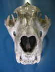

Cranium


This work is licensed under a
Creative Commons License.
Middle Ear
1
stapes obturator
foramen ; 0 large 1 small-abs,
2 petrosal-squamosal joint ; 0 flat 1 ball-socket 2 minimal contact 3 tubular,
3 squamosal external auditory meatus (EAM) ; 0 no approximation ventral EAM 1 squamosal ventral EAM,
4 fenestra cochleae ; 0 present 1 absent,
5 fenestra cochleae orientation ; 0 posterolat 1 posterior,
6 jugular foramen ; 0 similar fenestr coch 1 larger fenestr coch,
7 crista interfenestralis ; 0 abs 1 pres,
8 width basal cochlea ; 0 <20% basicran width 1 >20% basicran width,
9 anterior promontory ; 0 anteriorly smooth 1 projects,
10 petrosal canals ; 0 absent 1 present,
11 transpromontorial sulcus ; 0 pres 1 abs,
12 stapedial sulcus ; 0 pres 1 abs,
13 piriform fenestra ; 0 absent 1 present,
14 petrosal pachyostosis ; 0 light 1 dense,
15 tegmen tympani pneumatization ; 0 laminar 1 air cells,
16 mastoid pneumatization ; 0 laminar 1 air cells,
17 tegmen tympani process ; 0 flat 1 projects,
18 epitympanic recess ; 0 continuous middle ear 1 separate,
19 basisphenoid bulla ; 0 reduced 1 present,
20 alisphenoid bulla ; 0 reduced 1 present,
21 basioccipital bulla ; 0 absent 1 shields bulla medially,
22 caudal tympanic process petrosal; 0 reduced 1 shields posterior bulla,
23 rostral tympanic process petrosal; 0 reduced 1 present,
24 ectotympanic; 0 phaneric 1 occluded,
25 ectotympanic shape; 0 ringlike 1 expanded,
26 ectotymanic involucrum; 0 abs 1 pres,
27 external auditory meatus shape ; 0 ovoid 1 ventral extension,
28 tympanic annulus ; 0 supports membrane 1 conical ligament,
29 entotympanic ; 0 small-abs 1 present,
2 petrosal-squamosal joint ; 0 flat 1 ball-socket 2 minimal contact 3 tubular,
3 squamosal external auditory meatus (EAM) ; 0 no approximation ventral EAM 1 squamosal ventral EAM,
4 fenestra cochleae ; 0 present 1 absent,
5 fenestra cochleae orientation ; 0 posterolat 1 posterior,
6 jugular foramen ; 0 similar fenestr coch 1 larger fenestr coch,
7 crista interfenestralis ; 0 abs 1 pres,
8 width basal cochlea ; 0 <20% basicran width 1 >20% basicran width,
9 anterior promontory ; 0 anteriorly smooth 1 projects,
10 petrosal canals ; 0 absent 1 present,
11 transpromontorial sulcus ; 0 pres 1 abs,
12 stapedial sulcus ; 0 pres 1 abs,
13 piriform fenestra ; 0 absent 1 present,
14 petrosal pachyostosis ; 0 light 1 dense,
15 tegmen tympani pneumatization ; 0 laminar 1 air cells,
16 mastoid pneumatization ; 0 laminar 1 air cells,
17 tegmen tympani process ; 0 flat 1 projects,
18 epitympanic recess ; 0 continuous middle ear 1 separate,
19 basisphenoid bulla ; 0 reduced 1 present,
20 alisphenoid bulla ; 0 reduced 1 present,
21 basioccipital bulla ; 0 absent 1 shields bulla medially,
22 caudal tympanic process petrosal; 0 reduced 1 shields posterior bulla,
23 rostral tympanic process petrosal; 0 reduced 1 present,
24 ectotympanic; 0 phaneric 1 occluded,
25 ectotympanic shape; 0 ringlike 1 expanded,
26 ectotymanic involucrum; 0 abs 1 pres,
27 external auditory meatus shape ; 0 ovoid 1 ventral extension,
28 tympanic annulus ; 0 supports membrane 1 conical ligament,
29 entotympanic ; 0 small-abs 1 present,
Basicranium
30
mastoid exposure
; 0 exposed 1 occluded,
31 petromastoid exposure ; 0 posterior 1 lateral,
32 foramen ovale ; 0 within alisph 1 post alisph 2 squamosal,
33 alisphenoid canal ; 0 present 1 absent,
34 alisphenoid canal position ; 0 lateral sphenorbital fissure 1 confluent sphenorbital fissure,
35 maxilla-squamosal connection ; 0 unconnected 1 connected ventral sphenorbital fissure
36 ectopterygoid ; 0 single 1 dual,
37 basisphenoid pit ; 0 absent 1 present,
38 posterior lacerate foramen ; 0 narrow 1 anteroposteriorly elongate,
39 hypoglossal foramen ; 0 abs 1 single 2 multiple,
40 ventral basisphenoid ; 0 exposed 1 covered by vomer 2 covered by pterygoids,
31 petromastoid exposure ; 0 posterior 1 lateral,
32 foramen ovale ; 0 within alisph 1 post alisph 2 squamosal,
33 alisphenoid canal ; 0 present 1 absent,
34 alisphenoid canal position ; 0 lateral sphenorbital fissure 1 confluent sphenorbital fissure,
35 maxilla-squamosal connection ; 0 unconnected 1 connected ventral sphenorbital fissure
36 ectopterygoid ; 0 single 1 dual,
37 basisphenoid pit ; 0 absent 1 present,
38 posterior lacerate foramen ; 0 narrow 1 anteroposteriorly elongate,
39 hypoglossal foramen ; 0 abs 1 single 2 multiple,
40 ventral basisphenoid ; 0 exposed 1 covered by vomer 2 covered by pterygoids,
Braincase
41 petromastoid exposure in braincase ; 0 exposed 1 excluded,42 subarcuate fossa ; 0 present 1 flat 2 semicircular canals reduced,
43 dorsum subarcute fossa ; 0 closed 1 open,
44 tentorium cerebelli ; 0 absent 1 divides braincase,
45 sinus canal ; 0 absent 1 present,
46 dorsum sellae ; 0 weak 1 prominent,
47 crista galli ; 0 flat 1 dorsally projects 2 cribriform plate abs,
Orbitotemoporal Region
48 foramen
rotundum
; 0 confluent sphenorbital fissure 1 distinct sphenorbital
fissure,
49 alisphenoid spine ; 0 flat 1 anteriorly projects,
50 optic foramen; 0 absent 1 distinct,
51 optic foramen size ; 0 caliber as V 1 caliber smaller V,
52 suboptic foramen ; 0 absent-hidden 1 present,
53 interorbital fenestra ; 0 absent 1 connects orbits,
54 ethmoid foramen ; 0 present 1 absent,
55 tuber maxillaris ; 0 absent 1 dorsal ridge in orbit,
56 Glenoid pos ; 0 even petrosal 1 dorsal petrosal,
57 glenoid shape ; 0 transverse 1 anteroposteriorly elongate 2 dual,
58 postglenoid foramen ; 0 separate glenoid 1 at glenoid,
59 postglenoid process ; 0 absent 1 present 2 pres-AP,
60 ento-postglenoid processes ; 0 separate 1 connected,
61 entoglenoid process ; 0 no-lat jaw support 1 post support,
62 zygomatic arch ; 0 complete 1 incomplete 2 squamosal-frontal,
63 jugal in glenoid ; 0 reaches glenoid 1 reduced anterior to glenoid,
64 anterior jugal ; 0 anterior edge orbit 1 lateral orbit,
65 zygomatic process squamosal ; 0 robust dorsolaterally 1 narrow laterally,
66 postorbital bar ; 0 reduced 1 surrounds 90% orbit,
67 postorb septum ; 0 absent 1 jugal-alisphenoid contact,
68 interorbital distance ; 0 separate 1 convergent,
69 facial lacrimal process ; 0 <= orbital process 1 large facial process,
70 orbital lacrimal process ; 0 flat 1 projects into orbit,
71 lacrimal foramen ; 0 present, 1 not exposed anterior orbit,
72 lacrimal foramen opening ; 0 posterior 1 lateral,
73 frontal in orbit ; 0 reduced contact palatine 1 broad contact palatine,
74 jugal in medial orbit ; 0 jugal restricted 1 jugal-parietal contact,
75 maxilla in medial orbit ; 0 reduced 1 extensive,
49 alisphenoid spine ; 0 flat 1 anteriorly projects,
50 optic foramen; 0 absent 1 distinct,
51 optic foramen size ; 0 caliber as V 1 caliber smaller V,
52 suboptic foramen ; 0 absent-hidden 1 present,
53 interorbital fenestra ; 0 absent 1 connects orbits,
54 ethmoid foramen ; 0 present 1 absent,
55 tuber maxillaris ; 0 absent 1 dorsal ridge in orbit,
56 Glenoid pos ; 0 even petrosal 1 dorsal petrosal,
57 glenoid shape ; 0 transverse 1 anteroposteriorly elongate 2 dual,
58 postglenoid foramen ; 0 separate glenoid 1 at glenoid,
59 postglenoid process ; 0 absent 1 present 2 pres-AP,
60 ento-postglenoid processes ; 0 separate 1 connected,
61 entoglenoid process ; 0 no-lat jaw support 1 post support,
62 zygomatic arch ; 0 complete 1 incomplete 2 squamosal-frontal,
63 jugal in glenoid ; 0 reaches glenoid 1 reduced anterior to glenoid,
64 anterior jugal ; 0 anterior edge orbit 1 lateral orbit,
65 zygomatic process squamosal ; 0 robust dorsolaterally 1 narrow laterally,
66 postorbital bar ; 0 reduced 1 surrounds 90% orbit,
67 postorb septum ; 0 absent 1 jugal-alisphenoid contact,
68 interorbital distance ; 0 separate 1 convergent,
69 facial lacrimal process ; 0 <= orbital process 1 large facial process,
70 orbital lacrimal process ; 0 flat 1 projects into orbit,
71 lacrimal foramen ; 0 present, 1 not exposed anterior orbit,
72 lacrimal foramen opening ; 0 posterior 1 lateral,
73 frontal in orbit ; 0 reduced contact palatine 1 broad contact palatine,
74 jugal in medial orbit ; 0 jugal restricted 1 jugal-parietal contact,
75 maxilla in medial orbit ; 0 reduced 1 extensive,
Rostrum
76
premaxilla-frontal
contact ; 0 absent 1 present 2 present over maxilla,
77 anterior nasals ; 0 fused with premaxilla 1 projecting,
78 posterior nasals ; 0 tapered 1 broad 2 horns,
79 metopic suture ; 0 unfused 1 fused,
80 maxilla medial to zygoma ; 0 solid 1 fenestrated 2 trabeculated,
81 infraorbital canal length ; 0 long 1 short,
82 infraorbital canal anterior foramen ; 0 small 1 similar ext nares,
83 orbit position to alveolar maxilla ; 0 anterior 1 dorsal 2 posterior,
84 external nares ; 0 anterior rostrum 1 dorsal cheek teeth 2 posterior rostrum,
77 anterior nasals ; 0 fused with premaxilla 1 projecting,
78 posterior nasals ; 0 tapered 1 broad 2 horns,
79 metopic suture ; 0 unfused 1 fused,
80 maxilla medial to zygoma ; 0 solid 1 fenestrated 2 trabeculated,
81 infraorbital canal length ; 0 long 1 short,
82 infraorbital canal anterior foramen ; 0 small 1 similar ext nares,
83 orbit position to alveolar maxilla ; 0 anterior 1 dorsal 2 posterior,
84 external nares ; 0 anterior rostrum 1 dorsal cheek teeth 2 posterior rostrum,
Palate
85
postpalate
spine ; 0 flat 1 prominent,
86 posterior hard palate to toothrow ; 0 posterior 1 even 2 anterior,
87 palatal notch ; 0 closed medial M3 1 open medial M3,
88 posteroventral maxilla ; 0 at toothrow 1 posterior toothrow ventrum pterygoid,
89 palatal premaxilla exposure ; 0 abs-alveoli only 1 small 2 half palate,
90 incisive foramen presence; 0 present 1 absent,
91 incisive foramen number ; 0 dual opening palate 1 single opening palate,
92 incisive foramen shape ; 0 oval 1 elongate,
93 palatine fenestrae ; 0 solid 1 posterior 2 anterior
86 posterior hard palate to toothrow ; 0 posterior 1 even 2 anterior,
87 palatal notch ; 0 closed medial M3 1 open medial M3,
88 posteroventral maxilla ; 0 at toothrow 1 posterior toothrow ventrum pterygoid,
89 palatal premaxilla exposure ; 0 abs-alveoli only 1 small 2 half palate,
90 incisive foramen presence; 0 present 1 absent,
91 incisive foramen number ; 0 dual opening palate 1 single opening palate,
92 incisive foramen shape ; 0 oval 1 elongate,
93 palatine fenestrae ; 0 solid 1 posterior 2 anterior